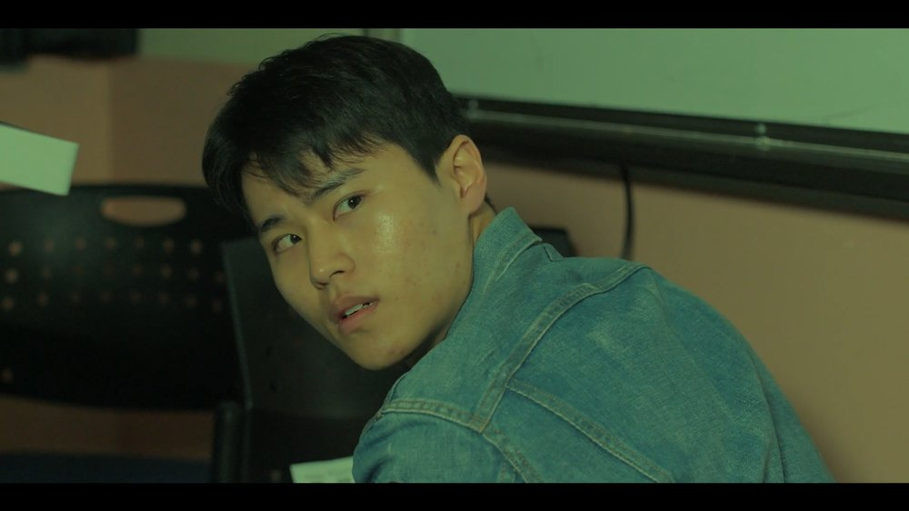
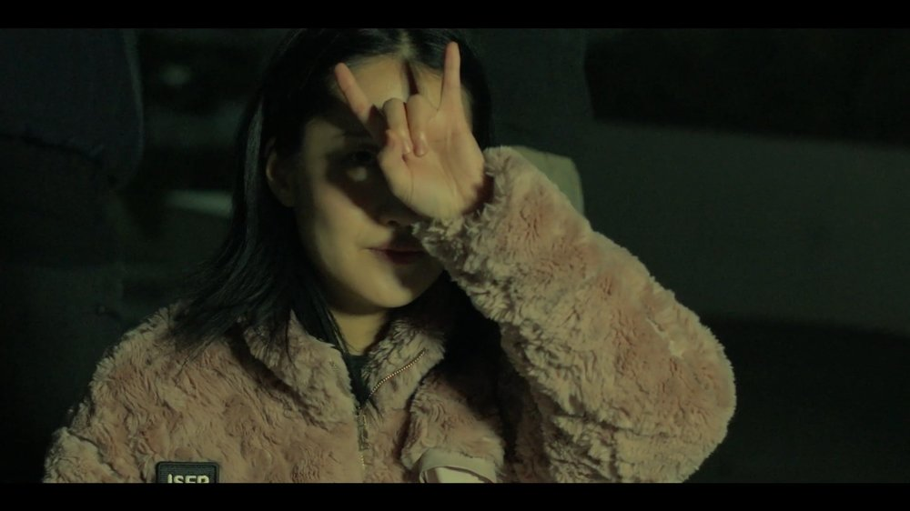
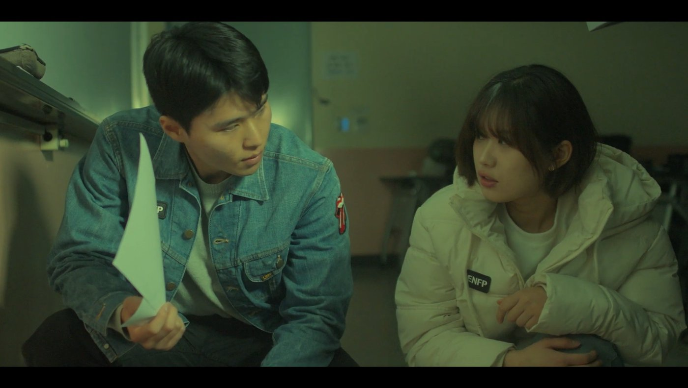
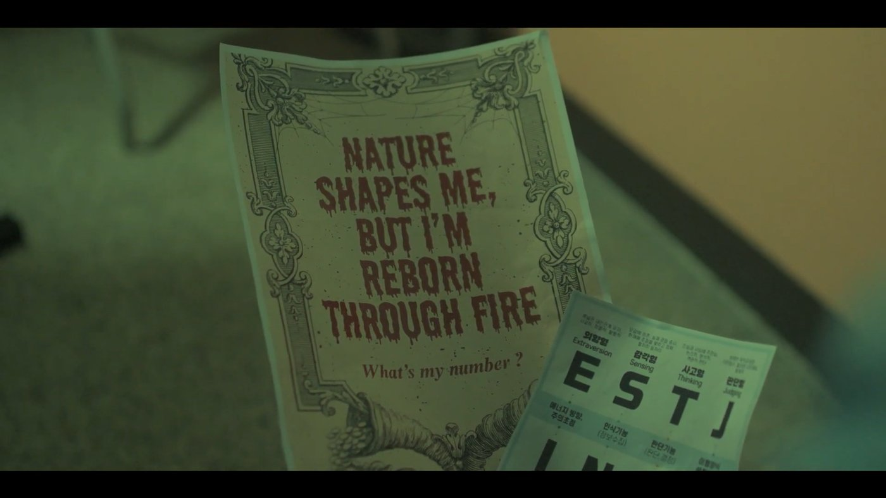
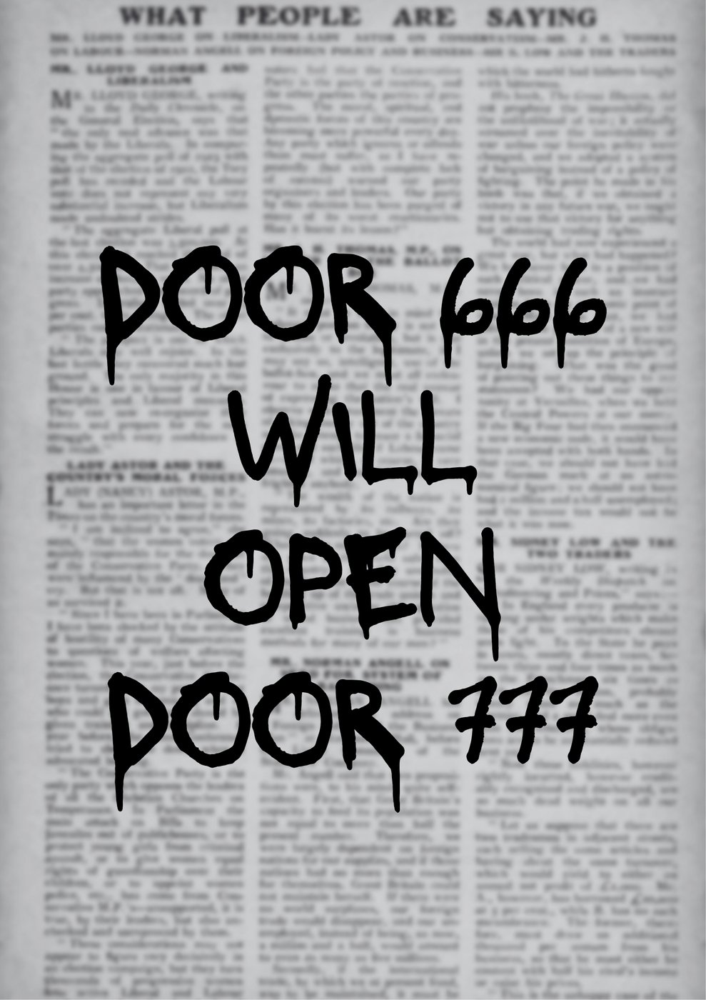
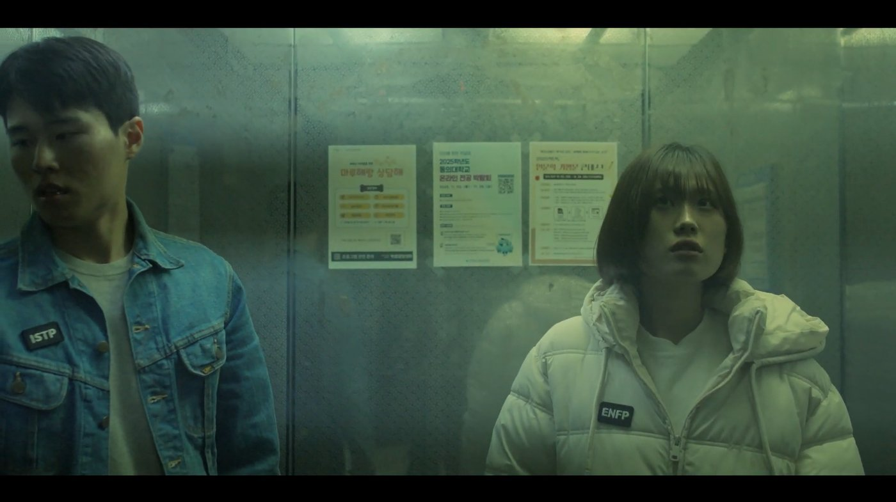
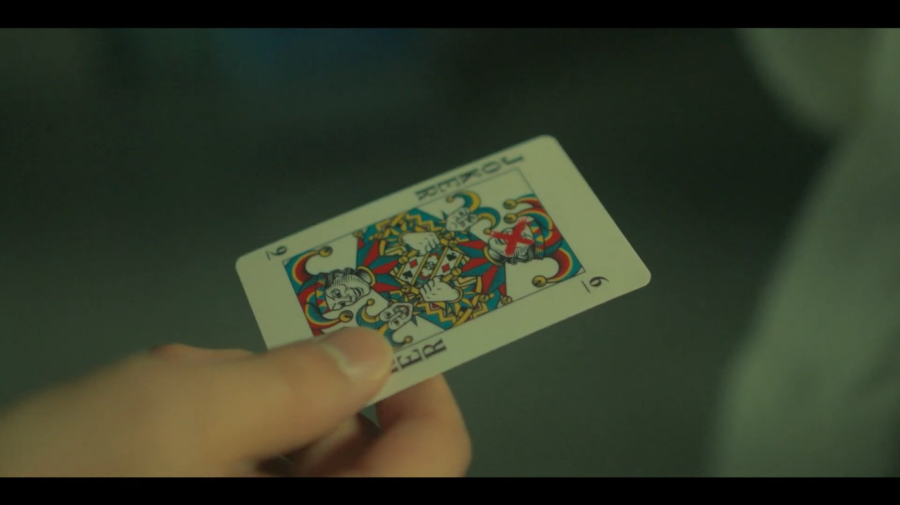
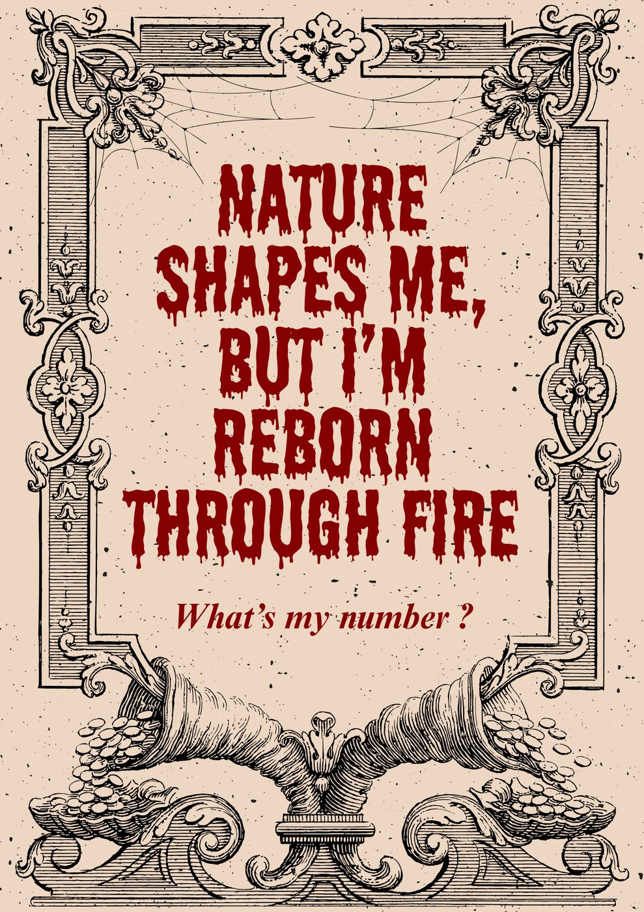
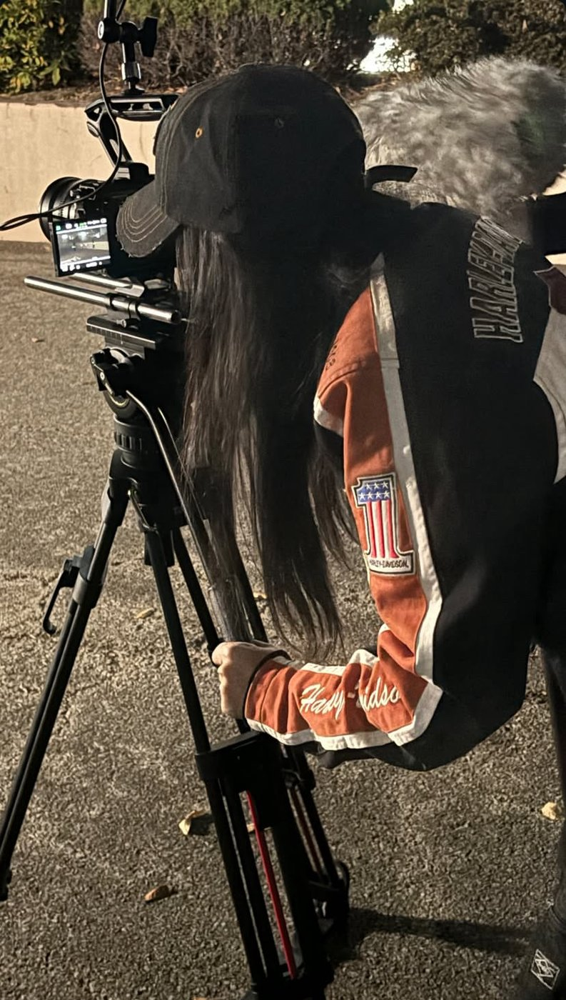

SYNOPSIS
Une université devient la scène d'un jeu social impitoyable orchestré par le Diable (ENTP). Seize étudiants, portant des badges MBTI et armés d'objets du quotidien, doivent survivre à des règles changeantes, à des alliances fragiles et à un badge transformée en arme. Au cœur du chaos, Heejin (ENFP) et Hajoon (ISTP), opposés en tout point, sont contraints de coopérer et découvrent que la confiance se prouve par les actes, pas par des étiquettes.
Les Règles
- RÈGLE 01, LES DAREDEVILSVous êtes 16 Daredevils, prisonniers du domaine du Diable, trouvez la sortie !
- RÈGLE 02, LES ARMESVos armes sont des objets du quotidien. Deux à la fois, maximum.
- RÈGLE 03, LES BADGES MBTIVérité ou mensonge ? Faites confiance aux badges, ou à la personne.
- RÈGLE 04, LA CONFIANCEVos alliés ne valent que ce que vaut votre confiance.
- BONUS, VRAIE ARMEUne vraie arme à feu est cachée parmi les autres.
Les Personnages

Heejin
Protagoniste principale. Empathique, créative, impulsive. Sa force réside dans sa capacité à rallier les autres, même quand tout s'effondre.

Hajoon
Pragmatique, silencieux, d'une efficacité implacable. La survie est son seul code moral, jusqu'à sa rencontre avec Heejin.

Le Diable
Elle orchestre le jeu depuis l'ombre. Elle ne joue pas, elle observe. Elle a volé le badge du ISFP pour inspirer confiance et manipuler les Daredevils.

Dowon
Ami de Heejin. Prêt à laisser Hajoon se sacrifier pour que lui et Heejin puissent quitter le jeu. Sa loyauté a un prix.
Film & props








Dans les coulisses
